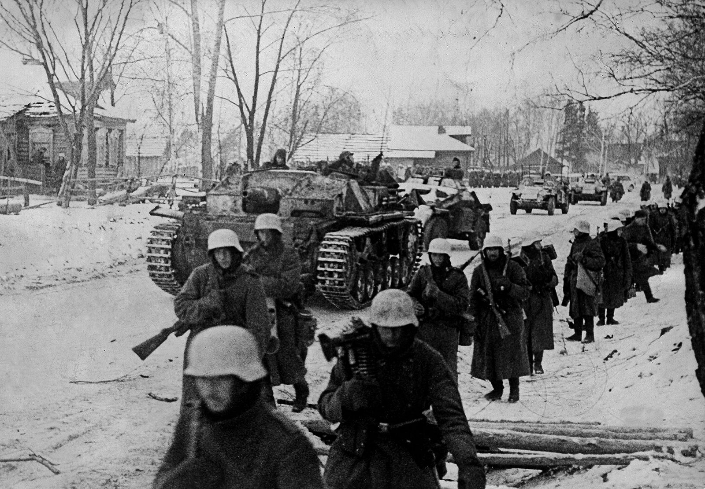

A Batalha de Moscow foi travada entre a Alemanha Nazista e a União Soviética de 30 de setembro de 1941 a 7 de janeiro de 1942, durante a Segunda Guerra Mundial. Foi o clímax da Operação Barbarossa da Alemanha Nazista e pôs fim à intenção alemã de capturar Moscou, o que acabou por condenar o Terceiro Reich.